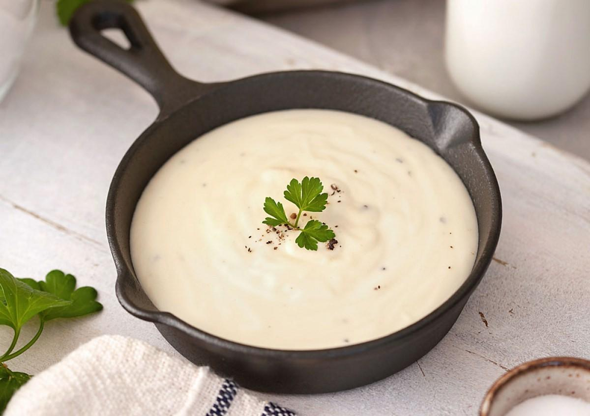

Acompanhamentos
Molho branco (sem ir ao fogo)

Ingredientes
- ½ lata de creme de leite
- 1 copo de requeijão
- 1 colher de farinha de trigo
- 1 colher de tempero pronto
- 1 pitada de noz-moscada
- 2 colheres de queijo ralado
Modo de preparo
- Misture todos os ingredientes até homogenizar.
- Espalhe sobre o frango (ou outro prato) e leve ao forno até dourar.
Observação
Receita manuscrita da família; pensada para cobrir frango no forno.